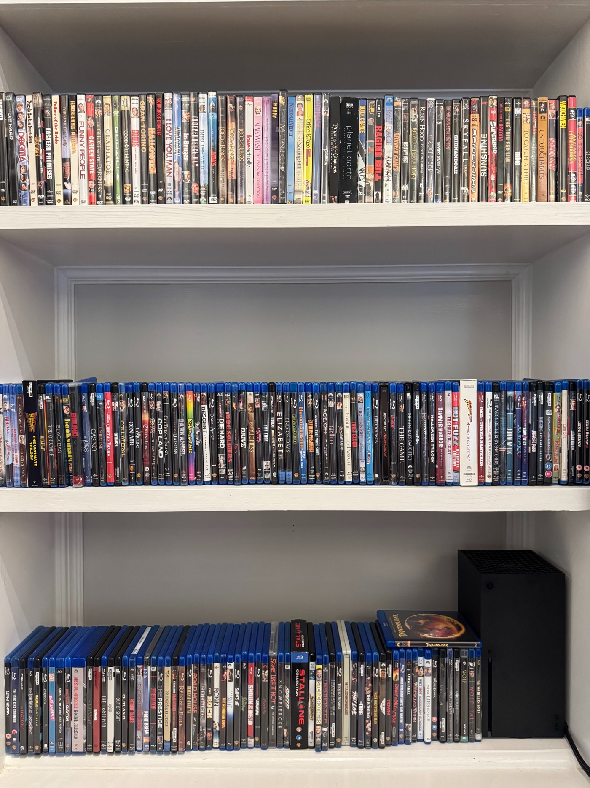

Persona 5 Royal
Розширена версія культової JRPG від Atlus. У колекції — колекційне видання з артбуком і саундтреком на окремому диску.
Пройдено повністю на 100%, включно з усіма соціальними лінками персонажів.

Цей сайт — каталог моєї особистої колекції відеоігор: від класики 90-х до сучасних хітів. Тут я зберігаю інформацію про кожну гру, яку проходив або яка чекає своєї черги на полиці. Метою проєкту є систематизація колекції.
Особливу увагу приділяю фізичним копіям — дискам і картриджам, адже цифрові версії з часом можуть зникнути з магазинів. Колекціонування ігор — це спосіб зберегти історію індустрії.
Серед усіх ігор особливе місце займають JRPG та іммерсивні симулятори — жанри, у яких важлива не графіка, а глибина сюжету та свобода вибору гравця.
Ігри — це не витрата часу, а інвестиція в досвід, який неможливо отримати іншим способом.
Розширена версія культової JRPG від Atlus. У колекції — колекційне видання з артбуком і саундтреком на окремому диску.
Пройдено повністю на 100%, включно з усіма соціальними лінками персонажів.

Один із найкращих прикладів жанру immersive sim: кожну місію можна пройти непоміченим, силою або через злам систем безпеки.
Цифрову ліцензію видавець може відкликати будь-коли, тоді як фізичний диск або картридж залишається у власності назавжди.
Диск оглядають на подряпини під косим світлом, а картридж перевіряють на окислення контактів і цілісність етикетки.
Так, якщо плануєте зберігати гру довгостроково — колекційні видання рідше знецінюються і мають додаткові матеріали.